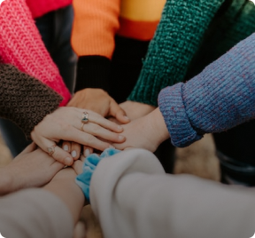
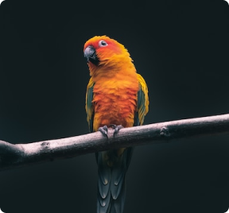

Read to get started?
Join thousand of other today
Categories

Education

Adult
Childiren

Animals


Volunteers
Medical volunteers
to ensure supplies' integrity while sorting.
Group Volunteer Opportunities
Animal volunteers
Education volunteers
Enviroment Volunteer
we inspire people of all ages to learn about
the wonders of the natural world